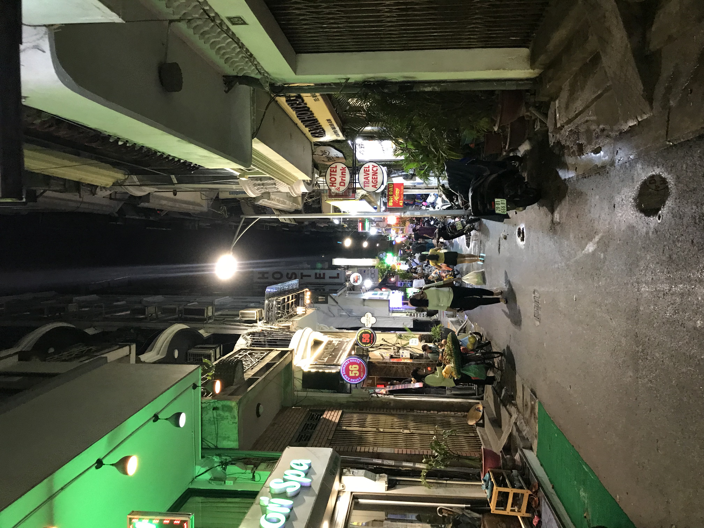

Personal Info:
- Computer Science Major
- Graduated Lone Peak High, 2014
- Junior
- I'm a big fan of Rocky Road Tillamook ice cream
My five favorite books:
- Sahara, Clive Cussler
- The Last Command, Timothy Zahn
- The Lazarus Vendetta, Robert Ludlum
- Celtic Empire, Clive Cussler
- God's Middle Finger: Into the Lawless Heart of the Sierra Madre, Richard Grant
Winter
Fury of the storm
Blistering wind and snowflakes
I zip up my coat
My personal interests:
Welcome to my site! It's not much, but I'm calling it home for now. You can see a few pictures that I've taken, as photography is a hobby of mine. The first picture is from a hike in Tuolumne Meadows, Yosemite. The alley is from a trip to Vietnam last year. Lastly, you can see the one of the wings of our very own spiral galaxy. I took that picture in Indian Creek, a area about an hour south of Moab. Astrophotography is kind of a P.I.T.A., but if you suffer through the process of getting a good shot or two, you're rewarded with an incredible look into the great beyond.
I've got a lot of hobbies, mainly climbing, cycling, and gaming as of lately. It's been difficult to balance the outdoors and a CS major/courseload, easier to balance with gaming. I mostly play e-sports shooters, although I really love role-playing games like GTA V, The Last of Us, and the soon to be Cyberpunk 2077. I plan on focusing on software development in my degree, and I may end up in the videgame field. I think the way that game developers can create entire worlds is incredible, and I'd love to see something like Ready Player One (minus the dystopia) come into existence.

Below, you can see a cool looking alley in Hanoi, Vietnam. I spent a couple week there on my own last year, seeing what life was like outside the US. It was an interesting experience to say the least. I met a lot of nice people and ate a lot of good food. I also got to spend a half day in Osaka on the way back. Although I was petrified with culture shock on arrival, I soon learned to love the city, the people, and the culture. Although my international travel is fairly limited, I'd say that travelling and experiencing other ways of life is a passion of mine.

Class Schedule:
| Monday | Tuesday | Wednesday | Thursday | Friday | |
|---|---|---|---|---|---|
| 10:00 | Calculus | Calculus | Calculus | Calculus | Calculus |
| 10:30 | |||||
| 11:00 | Discrete Math | Discrete Math | Discrete Math | ||
| 11:30 | |||||
| 12:00 | Work | Work | Work | ||
| 1:00 | |||||
| 1:30 | |||||
| 2:00 | |||||
| 2:30 | |||||
| 3:00 | |||||
| 3:30 | |||||
| 4:00 | |||||
| 4:30 | |||||
| 5:00 | |||||
| 5:30 | Web Programming | Web Programming | |||
| 6:00 | |||||
| 6:30 |